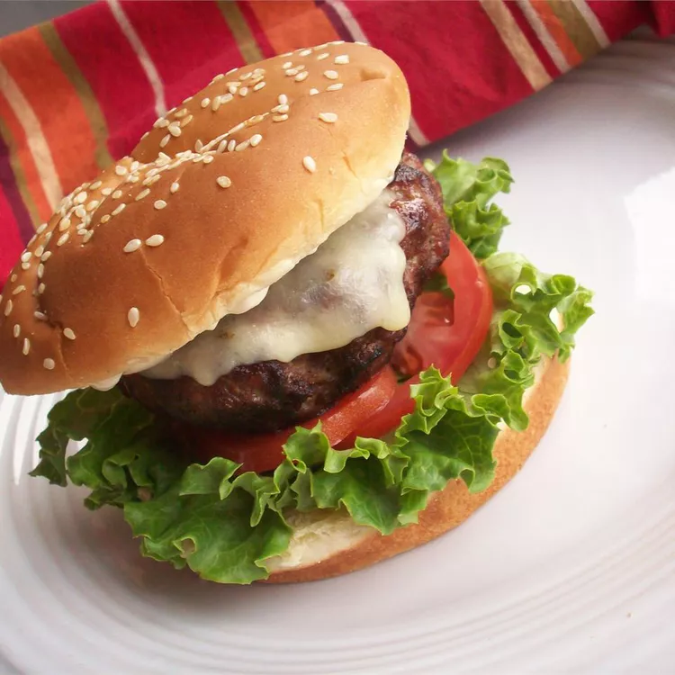

Tex-Mex Burger

Description
The classic Tex-Mex Burger with beef, salad, tomatoes and cheddar cheese
Ingredients
- 1/2cup mayonnaise
- 1 1/3 pounds ground beef sirloin
- 1 jalapeno pepper, seeded and chopped
- 1/2 cup white diced onion
- 1 clove garlic, minced
- 1 teaspoon Worcestershire sauce
- 4 slices pepperjack cheese
- 4 hamburger buns, split
- 4 leaves lettuce
- 4 slices tomato
Steps
- Preheat grill for medium-high heat.
- In a large bowl, mix together the ground sirloin, jalapeno pepper, onion, garlic, and Worcestershire sauce using your hands. Divide into 4 balls, and flatten into patties.
- Lightly oil the grilling surface, and place the patties on the grill. Cook for about 5 minutes per side, or until well done. During the last 2 minutes, lay a slice of cheese on top of each patty. Spread the mayonnaise onto the insides of the buns. Put burgers in the buns, and top with lettuce and tomato to serve.